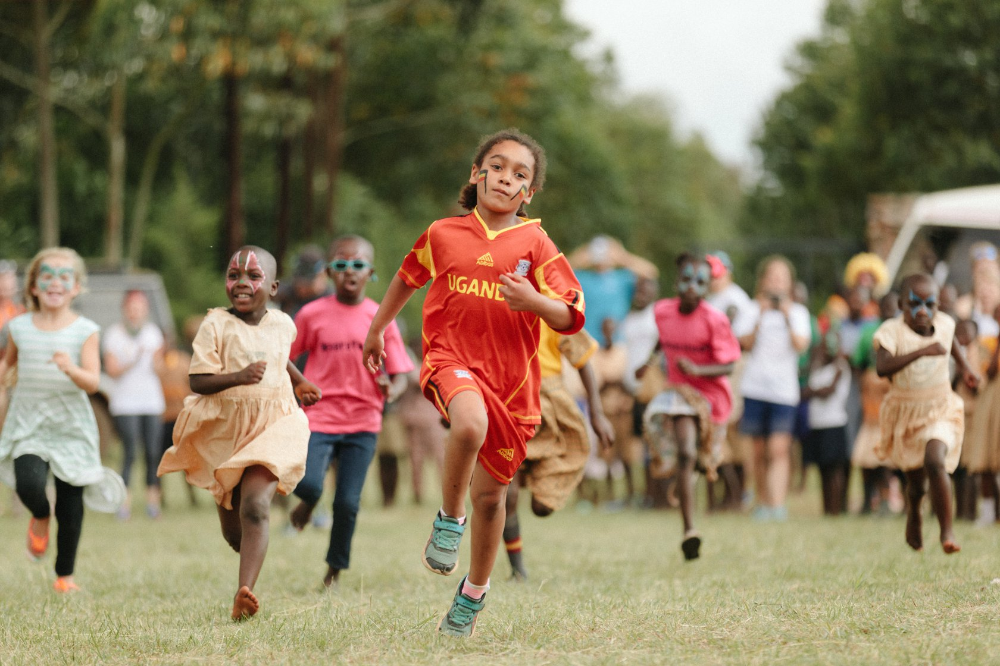
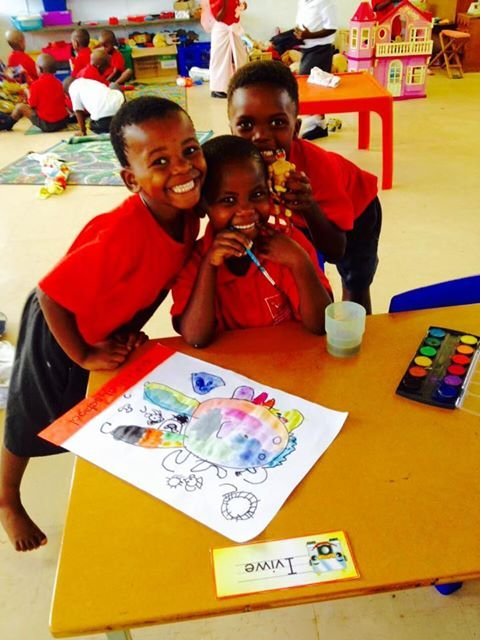
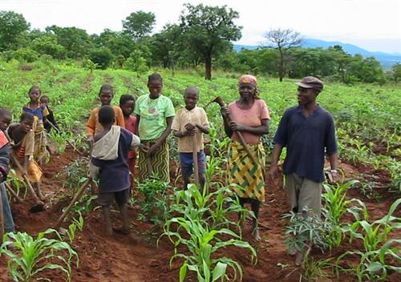
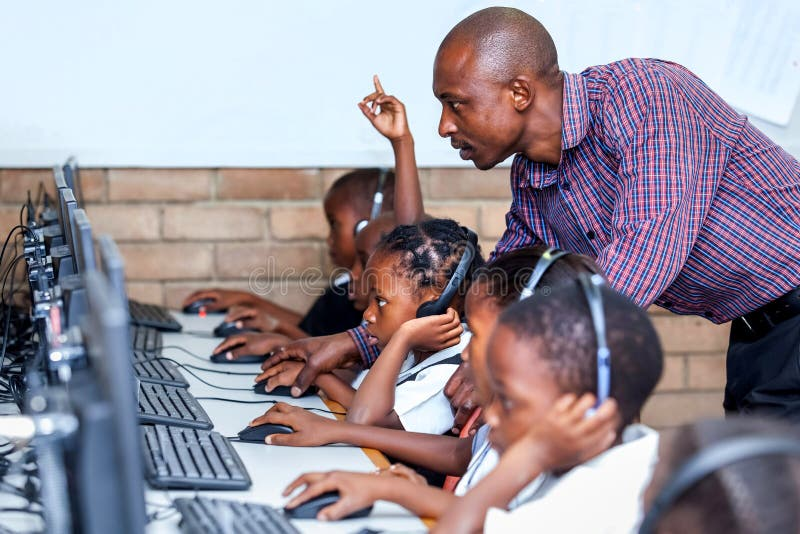
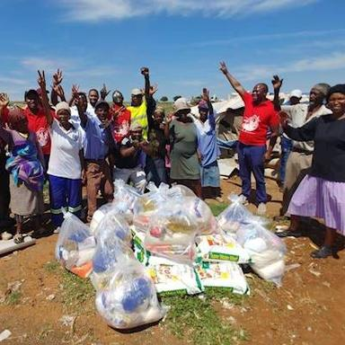
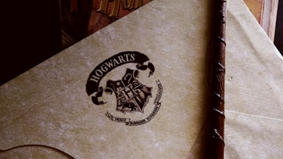
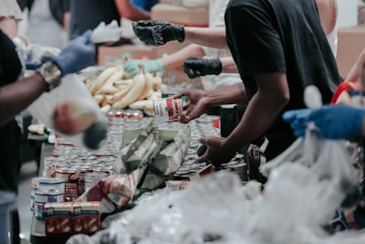
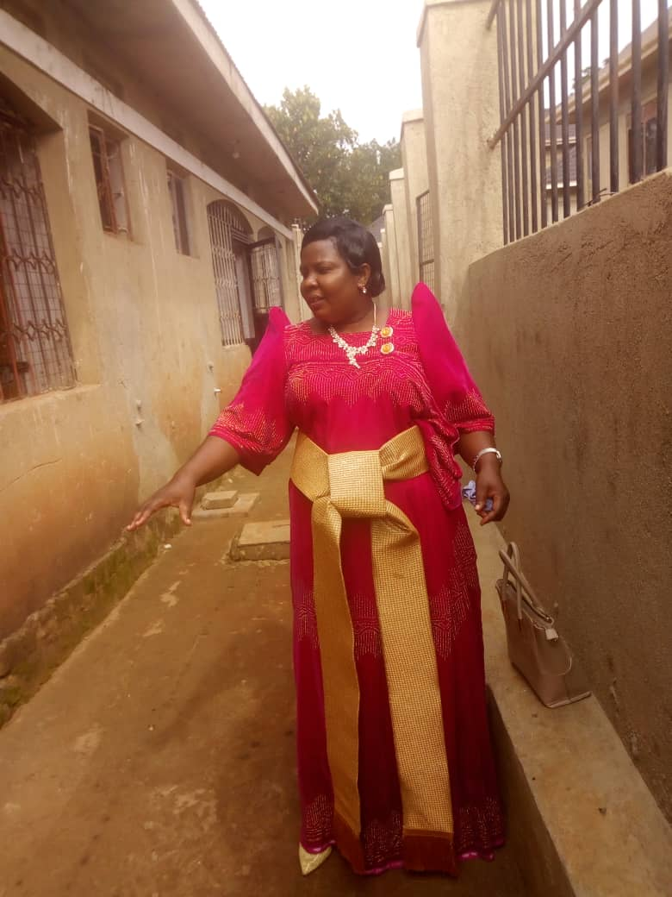

Kazo Archdeaconry Children's Ministry (KACM) is a ministry of the Church of Uganda under the Namirembe Diocese, headquartered at St. Luke Church, Lugoba Road, Kazo - Kawempe, Kampala. We exist to nurture every child in the love of Christ, equip families with tools of faith, and ensure that no child is left behind due to poverty, neglect, or lack of opportunity. Every day, children across the Kazo Archdeaconry face the risk of school dropout, malnutrition, violence, and spiritual emptiness — KACM stands in the gap.
Three pillars through which we reach every child across the Archdeaconry
We share the Gospel through football, netball, and athletics — building character and faith in every child.
Learn MoreChildren express their faith through music, drama, dance and poetry — developing confidence and talent for God.
Learn MoreWe bring food, healthcare, education, and the Gospel to the most vulnerable families across the Archdeaconry.
Learn MoreTeaching children to pray and build Christ-centred friendships.
Building character through interactive activities and group discussions.
Reaching every child in English, Luganda, and Runyakitara.
Teaching children the biblical principle of generosity.
Monthly youth-led services celebrating the next generation.
Counselling and legal support for child survivors of violence.
Promoting child-friendly laws across the Archdeaconry.
Teaching children to pray and build Christ-centred friendships.
Building character through interactive activities and group discussions.
Reaching every child in English, Luganda, and Runyakitara.
Teaching children the biblical principle of generosity.
Monthly youth-led services celebrating the next generation.
Counselling and legal support for child survivors of violence.
Promoting child-friendly laws across the Archdeaconry.
For as little as $20 a month, you can keep one child in school. Over 200 children are already sponsored — join us.
Sponsor a Child NowSee the faces, hear the voices, and witness the impact of KACM.
A glimpse into how KACM nurtures children across the Archdeaconry.
Hear from sponsored children and see how your support changes lives.
Football, music, drama — reaching children through talent and the Gospel.
Food, healthcare, and the Gospel — reaching families across the Archdeaconry.
Moments captured across our programmes and outreaches.
Sunday school children across the Kazo Archdeaconry — growing in faith, together.
Stay connected with KACM — get updates delivered to your inbox.
We respect your privacy. Unsubscribe anytime.
We'd love to hear from you — reach out and let's connect.
Mon–Sat: 8:00 AM – 5:00 PM · Sunday: 8:00 AM – 12:00 PM
Get KACM updates, stories, and prayer requests delivered to your inbox.
We respect your privacy. Unsubscribe anytime.
Click any photo to view full size
 Children's Programme
Children's Programme
Sports Ministry
Music & Dance Community Outreach
Community Outreach
Farm to Fork
Resource Centre
Community Care Sponsorship
Sponsorship Faith & Education
Faith & Education Grace's Story
Grace's Story Sponsor Sarah
Sponsor Sarah Sponsor David
Sponsor David Sponsor Rebecca
Sponsor Rebecca Student Peter
Student Peter
Student Agnes
Parent Jane LC1 Chairman
LC1 Chairman Rev. Semei
Rev. Semei
Publicity Secretary Sports & MDD
Sports & MDD Good Samaritan
Good Samaritan Asst. Games
Asst. Games Development Richard
Development Richard Maganjo Children
Maganjo Children Nabweru Children
Nabweru Children St. Paul Ebenezeri
St. Paul Ebenezeri Nabweru Teachers
Nabweru Teachers Nabweru Kids
Nabweru Kids Teacher Kakeeto
Teacher Kakeeto Teachers Group
Teachers Group Teachers & Bishop
Teachers & Bishop Teachers Fellowship
Teachers Fellowship Teachers Worship
Teachers Worship Teacher & Parent
Teacher & Parent Teacher Hugging
Teacher Hugging Trophy Win
Trophy Win Team Trophy
Team Trophy Cultural Dance
Cultural Dance Performance
Performance Art Class
Art Class Students Drawing
Students Drawing All Children
All Children Praise Session
Praise Session Color Groups
Color Groups Blue Group
Blue Group Green Group
Green Group Red Group
Red Group